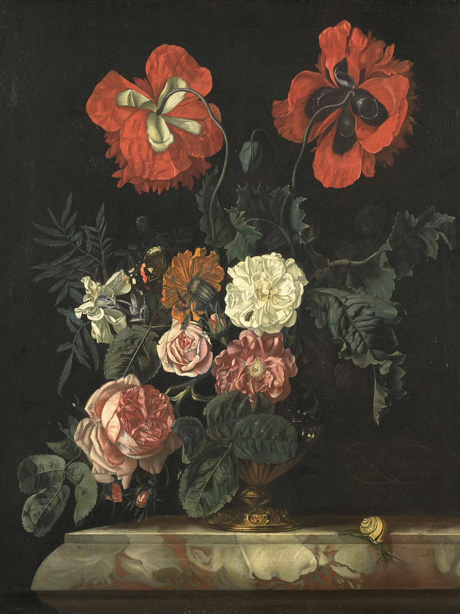

Jessie
Cullen
Fine art curator, living and working in Berlin, Germany
Vase with Flowers. Circa 1700.
Institution: Mauritshuis
Cat with kittens. Date: 1844
Institution: Rijksmuseum
Still Life with Flowers and Fruit. Date: 1728.
Institution: Rijksmuseum

Still Life with Flowers. Date: 1718.
Institution: Rijksmuseum